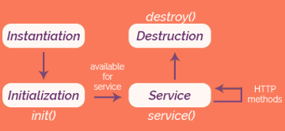

About Java Technologies
Java is an object-oriented programming language that can also be used for developing web applications. Web applications are programs from a server that can be run and used in multiple computers through web browsers or other web technologies. There are different Java technologies that are used to create web applications under the Java EE(Enterprise Edition) platform. There are many technologies available, however, there are only two Java technologies that will be discused in this course, and they are Java Servlet and JavaServer Pages.
Java Servlet
Java Servlets are programs that handle HTTP requests and generate HTTP responses. These programs create dynamic web content. This technology is hosted in a servlet container that provides the environment in which the servlet runs, and it also serves as a means of controlling the servlet.
Servlets are preferrably used when web applications require a lot of processes and manipulations. See the Java Servlet API to know more about it.
Servlet Lifecycle
This part of the discussion explains the lifecylce of a servlet, starting from its instantiation to destruction.
- Instantiation
Once a class is loaded, a servlet instance must be created using the default constructor.
- Initialization
The method init() is called and it initializes the environment which the servlet program will run. This method is invoked only once.
- Service
- Destruction
The method destroy() is called to terminate the servlet.
After initialization, the service() method is invoked to handle the request of the clients. In this phase of the servlet lifecycle, it is actually possible to handle multiple requests and send responses.
JavaServer Pages
JavaServer Pages (JSP) is a server-side programming technology that allows the developer to create both static and dynamic web content. JSP files have the extension of .jsp. JSP does not have a dedicated API as it can access Java's entire APIs. A JavaServer page's lifecycle is determined by the Java Servlet because JSPs are converted into Java Servlets.>/p> >p>Tags are used in JSP to create container for Java codes. These tags allow to separate the Java codes from other components of a JSP file. JSP has a library dedicated for the collection of tags. This library is referred to JSP Standard Tag Library or JSTL. The tags from this library can be categorized according to their functions. There are core tags, formatting tags, SQL tags, XML tags, JSTL functions. Unlike in Java Servlet, JSP allows users to create custom tags or user-defined tags within a JSP file.
JSP Page Directive
There are different kinds of JSP directives that informs the web container on how to convert a JSP page to servlet. Among these types of directives, there is the page directives. A page directive defines the attribute of a JSP page. The syntax for specifying a page directive is: <%@page attrbute="value">. Some examples of page directives are provided below.
Other than the page directive, there are also directives for tag library that starts with @taglib, and directives for including a file that starts with @include
Template
Templates in JSP are used as a guide for the content's layout. This could be composed of any markup text, such as HTML. A sample of a JSP template is provided below.
Predefined templates are available online. Check WebLogic Portal's list of templates that can be applied for different business processes.
JSP Comments
Developers can include comments in their JSP files by using the following delimiter: <%--- ---%>
Declarations can occur in any part of the file. Scriptlets, body of a method during translation time
Expression Language (EL)
Expression Languag (EL) allows access to the different components of JavaBeans. EL allows the user to set and get evaluations of expressions, and invoke methods.
Syntax of EL:
Whatever is set inside the curly braces get exaluated during the website's run time.
EL also allows the developer to use predefined objects. There are three types of implicit objects: maps for single set values (param, paramValues, header, headerValues, initParam, cookie), maps for scoped variables (applicationScope, sessionScope, requestScope), and page context (pageContext)
- param, paramValues
- header, headerValues
- cookie
- initParam
- applicationScope
- sessionScope
- requestScope
'param' stores the first value for a request parameter, while, 'paramValue' stores a String array that contains all the values for a request parameter.
'header' stores the first value for a request header, and 'headerValues' stores all the values for a request header in an array.
'cookie' is used to access cookies.
'initParam' is used to access initialization parameters.
'applicationScope is used to get application level attributes.
'sessionScope' maps session-scoped variable names to their values.
'requestScope' maps request-scoped variable names to their values.
JSP Custom Elements
Custom tags are user defined elements. When the JSP page is translated into a servlet, the tag is converted into a tag handler.
Scriptlets
Scriplets are Java codes embedded in JSP pages. Here is the syntax:
Scriptlet Expressions
Outputs the results of an expression to the JSP page. Here is the syntax:
JSP Requests
Because JSP is a server-side scripting language, it can handle requests from HTML forms.
Above is an example of an HTML file with a form tag. The form handler is specified as the file 'greet.jsp' with the HTML POST method.
Aside from the HTML POST method to process requests, the HTML GET method could also be used, however, when dealing with sensitive data, it is best to use the HTML POST method.